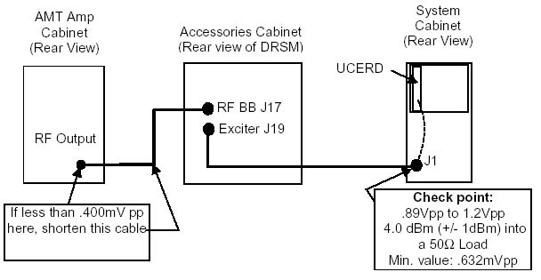

- 00000018WIA30D62E20GYZ
- id_131057743.0
- Aug 29, 2019 1:41:01 AM
3.0T AMT MNS Installation Instructions
Prerequisites
| Required persons | Preliminary requirements | Procedure | Finalization |
|---|---|---|---|
| 1 | Not Applicable | Not Applicable | Not Applicable |
| Item | Quantity | Effectivity | Part number | Manufacturer |
|---|---|---|---|---|
| Service Key | 1 | - | - | - |
| 350 MHz Scope (equivalent or greater) | 1 | - | - | - |
| RF Power Measurement Kit (for use of dummy load) | 1 | - |
46-317724G1 or G2 | - |
| RF Test Cables Kit | 1 | - |
46-255816G1 | - |
| TPS RF Cable Kit | 1 | - |
46-301549G1 or 46-301927G1 | - |
| Digital Multimeter (DMM) | 1 | - |
46-194427P49 | - |
Overview and Flowchart
Procedure
Overview
Procedure
Re-enabling Power Monitor
About this task
This section must be done to return the power monitor to the proper configuration. This must be performed before patient scanning.
Procedure
System Restoration
Procedure
- Remove all test equipment.
- Verify the AMT heliax cable is connected to the RF OUTPUT connector and tightened securely.
- Reinstall any cabinet covers if removed.
- Successfully complete one body scan.
- Successfully complete one head scan.
Spectro RF Amplifier Troubleshooting
Procedure
- Solution 1: If you have not already performed the oscilloscope roll-off calculation, do so now. Using this roll-off value, recalculate the calculated voltage level.
- Solution 2: Using the illustration below, check the exciter
(UCERD) output.
Figure 10. System Diagram 
Note:The slower the oscilloscope, the more signal roll-off it will experience. This roll-off is unique to every oscilloscope. Some are worse than others. The frequency you are measuring is 57.7 MHz signal. There is no standard roll-off value that you can use. Scope roll-off will also affect a 350 MHz scope, but it may not be as severe. Roll-off will make the UCERD output look smaller than it really is.
- Solution 3: Check cable losses between the UCERD and the back of the RF amplifier. Length is a factor. Temporarily replace the cable with a shorter cable, and re-measure at the output.
- Solution 4: Replace the cable between the DRSM and the Spectro RF amplifier.
- Solution 5: Possible bad DRSM. Consult OLC for further troubleshooting support.
- Problem 2: AMT amplifier goes into standby.
-
If a fault occurs in the AMT (MNS) amplifier, there can be up to a 5 to 6 minute delay for it to self-clear.
-
Before proceeding with any troubleshooting, wait for at least 6 minutes for this action to occur.
-
Finalization
Finalization
No finalization steps.